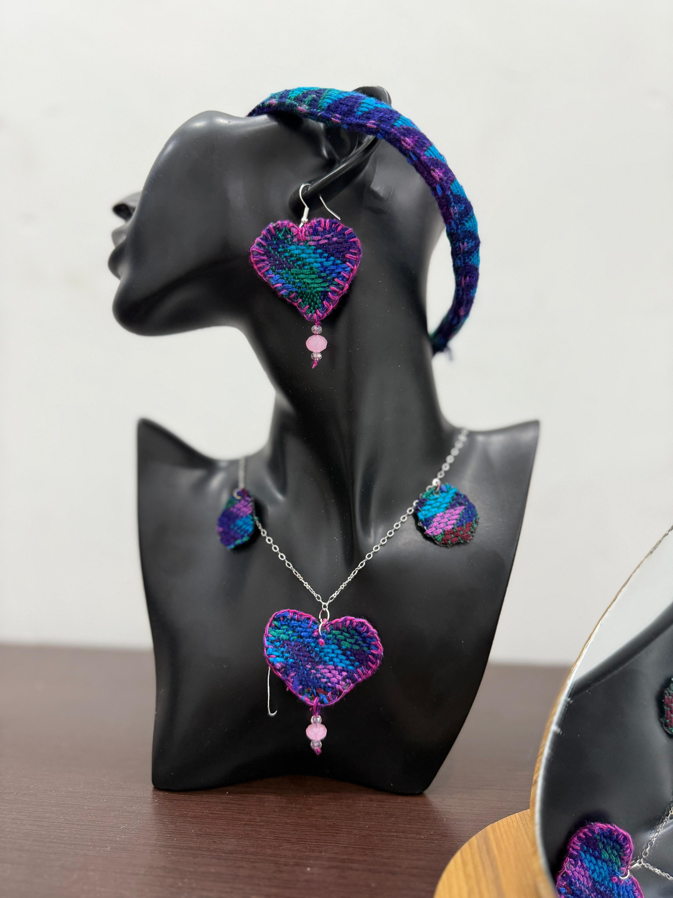
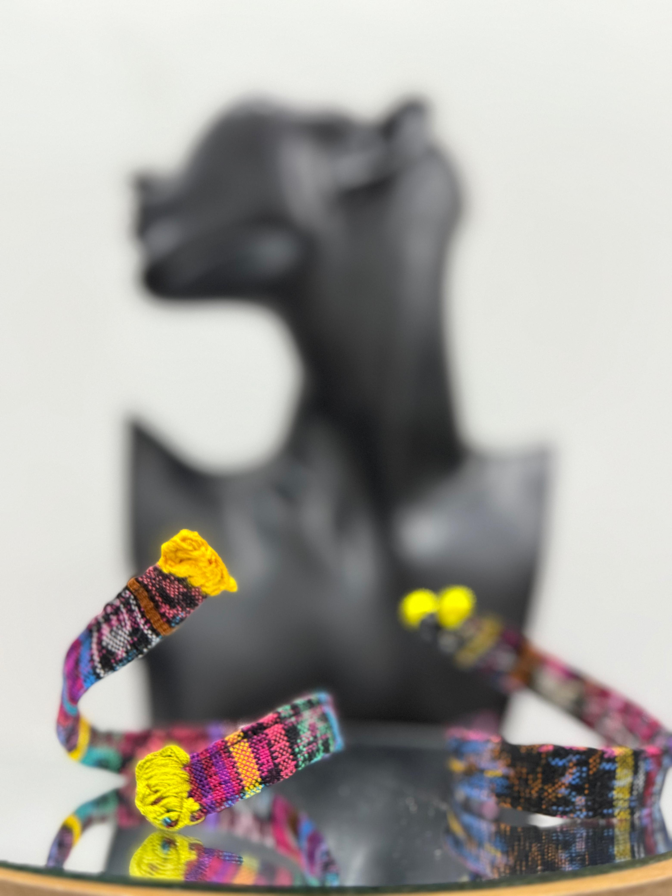
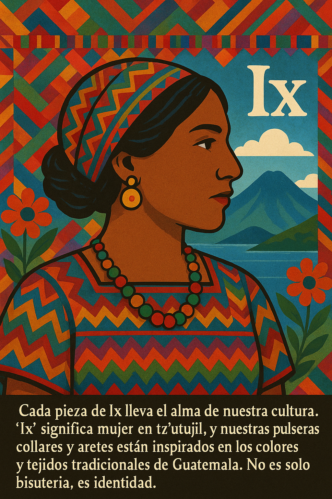

Ver Collares

Ver Pulseras
Collar corto con disco solar. Ideal para quienes brillan con su luz.
Q40.00
ComprarCollar largo con símbolo luna. Misterio y serenidad en un solo diseño.
ComprarCollar elegante con combinaciones simbólicas para la tierra. Belleza que respira tradición.
ComprarPulsera tejida con hilos de algodón reciclado. Un símbolo de conexión ancestral.
ComprarPulsera minimalista. Elegancia sutil inspirada en la fuerza de la mujer.
ComprarAretes en forma de mariposa, hechos con retazos de huipil bordado y gancho de metal reciclado. Representan la fuerza y transformación femenina en la cosmovisión maya.
ComprarAretes en forma de flor, bordados a mano sobre textil reutilizado. Simbolizan la conexión entre el cielo y la tierra.
ComprarDiseño cuadrado tipo almohadón, con textil acolchado y bordado tradicional. Inspirado en los altares mayas donde se honra la tierra.
ComprarInspirados en los moños tradicionales usados en las trenzas, hechos con tiras de cinta tejida y detalles bordados. Un homenaje a la identidad femenina maya.
ComprarAretes en forma de aros, elaborados con hilo bordado y pequeñas piedritas reutilizadas cosidas una a una, representando estrellas alineadas en el cielo nocturno. Un diseño que evoca los astros guías de la sabiduría maya.
ComprarDiseño inspirado en la forma de un pergamino maya, hecho con textil reciclado bordado en espiral, simulando los rollos antiguos que contaban historias del cielo y la tierra. Una nube que guarda secretos ancestrales.
ComprarIx es una marca de bisutería ecológica inspirada en los trajes tradicionales mayas de Guatemala, especialmente en el simbolismo y los colores usados por las mujeres tz’utujiles. Su esencia radica en rescatar la identidad cultural, empoderar a la mujer y promover el cuidado del medio ambiente mediante piezas artesanales hechas con materiales sostenibles. Cada diseño fusiona lo ancestral con lo contemporáneo, destacando la belleza de lo auténtico a través de una propuesta artística, ética y consciente.
Para más información o pedidos, escríbenos por WhatsApp o síguenos en redes sociales.